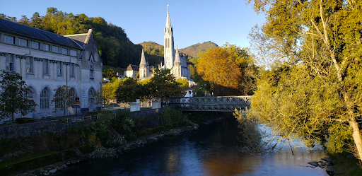

José Alvarez
Feast of the Immaculate Conception
August 2024 — Originally published on December 8, 2021 on The Minerva Quest (web archive)
Photo by José Alvarez.
December 8th celebrates the belief in the sinless lifespan and Immaculate Conception of the Blessed Virgin Mary. Catholics around the world celebrate it in different ways, sometimes praying novenas after the First Sunday of Advent which marks the start of the Christmas season. This wasn’t always the case. Although the controversy over the Immaculate Conception of Mary dates back to 1000 years ago, the apostolic constitution Ineffabilis Deus (“Ineffable God” in Latin), which defines the dogma of the Immaculate Conception of Mary, was promulgated on December 8th, 1854 by Pope Pius IX.
Allegedly, this doctrine would receive a happy confirmation four years later. Our Lady of Lourdes is a title in honour of the Marian apparitions that are said to have occurred in Lourdes, France in 1858. On March 25th of that same year, it is said that the mysterious lady, when asked who she was, told in Occitant dialect to 14-year old St. Bernadette Soubirous: “Que soy era immaculada concepciou.”
Many countries around the world have invoked the patronage of the Immaculate Conception. For instance, the people and Church of Korea, a nation hallowed by the blood of many martyrs, were quietly consecrated to the Blessed Virgin Mary amidst intense persecutions in the 19th century. Other countries consecrated to the Immaculate Conception are the United States, Brazil, Philippines, Spain, Ireland, Monaco, Nicaragua, Portugal, and Guatemala.
{kind=link}
Mary said: “My soul proclaims the greatness of the Lord; my spirit rejoices in God my Savior for he has looked with favor on his lowly servant. From this day all generations will call me blessed: the Almighty has done great things for me and holy is his Name.” A humble town in Guatemala celebrating the Immaculate Conception on December 8th with a tiny procession surrounded by fireworks, songs, and atol de lote can show a lot of devotion to the lowly servant of the Lord. In a different yet very special way, I can see, too, how God has lifted her up with my pilgrimage to the most beautiful place I have seen in my life. Either in Lourdes, Seoul, or San Pedro de las Bombas, I can see how all generations will call her blessed.